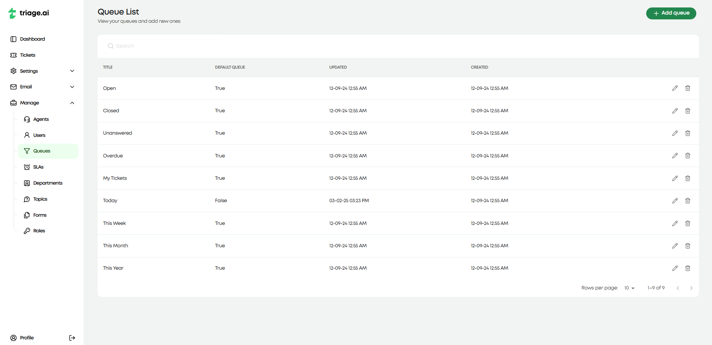
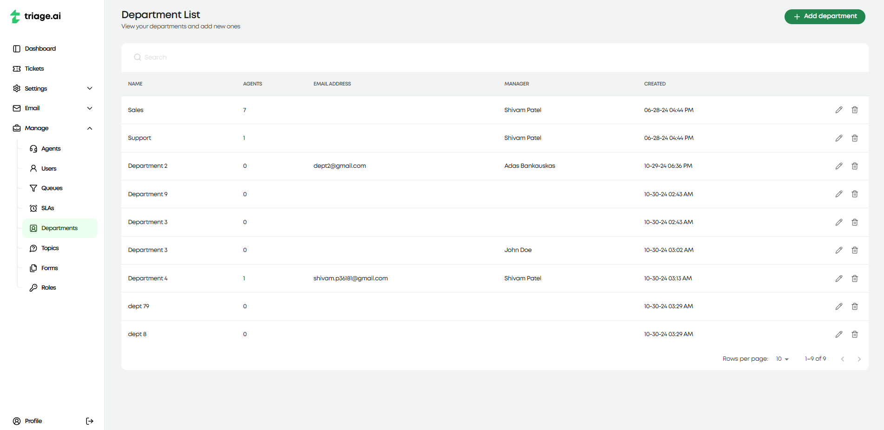
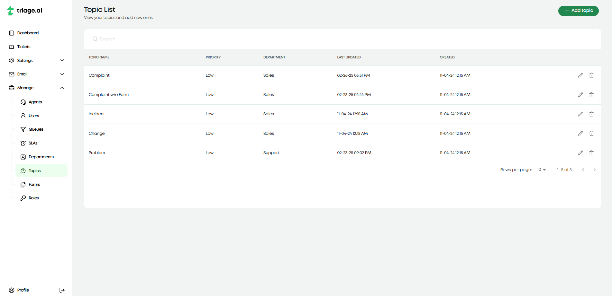
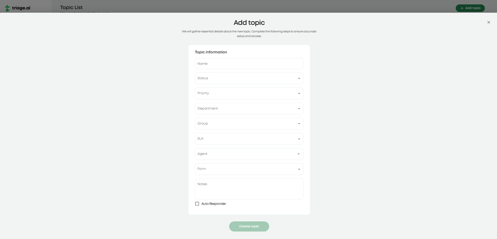
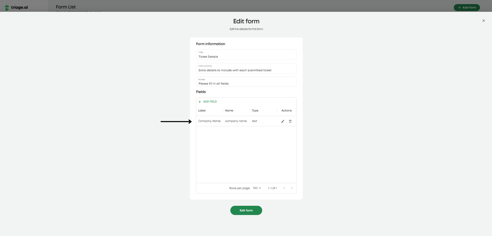
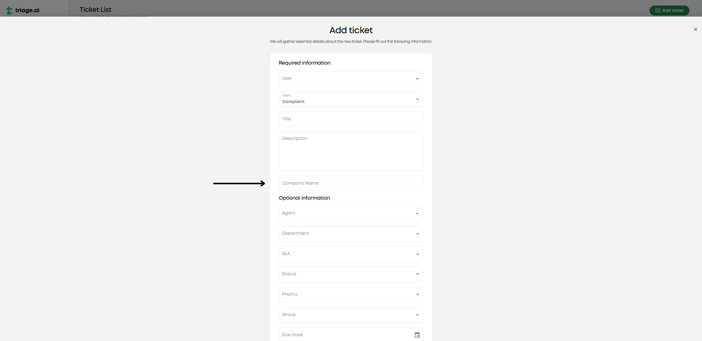

Manage Pages Guide
triage.ai provides a set of Manage Pages that allow administrators to customize the support process to fit their organization’s needs. These pages enable fine-tuned control over ticket organization, response time expectations, and the structure of collected ticket information.
The following management tools are available to administrators:
Queues: Define custom ticket filter criteria for improved ticket organization.
SLAs: Establish service-level agreements to manage response deadlines.
Departments: Organize support teams and ticket assignment logic.
Topics: Categorize tickets based on subject matter.
Forms: Add custom input fields to tickets for additional information collection.
Roles: Control agent permissions within the support system.
These pages can be accessed by admins only under the manage tab and configured to match your organization’s workflow.
Queues
Ticket queues allow administrators to create predefined ticket filters, helping agents quickly access relevant issues or users navigate their tickets. Similar to the advanced search feature in the Ticket Guide, queues can be customized based on all ticket attributes available. Below are the possible attributes that can be used to create a queue:
Ticket number
Date Created
Subject
User
User Name
Priority
Status
Close Date
Department
Assignee
Assignee Name
Due Date
Last Updated
Department
Answered
Overdue
These attributes come with operations that will let you decide what will/will not show up. triage.ai comes with a few default queues, which will be available site-wide to agents and users. Head to the queues page under the manage tab to create a new queue or edit an existing one. From here, you can create a new queue by first giving it a name and then specifying if this queue will be a default queue. Once it is created, you click the pencil icon and add the predefined criteria by which you wish to filter tickets. This should then show up in the ticket dashboard for immediate use.
SLAs (Service Level Agreements)
Service Level Agreements (SLAs) define response time expectations for tickets. If no due date is explicitly set on a ticket, the SLA determines when the ticket will be considered overdue. This helps ensure timely responses to customer inquiries. Currently, SLAs are just a grace period from when the ticket is created to when it is considered overdue. This will be expanded upon in the future to include more complex SLAs. To create an SLA or edit the current ones, visit the SLA tab under the manage tab.

There is an automatic workflow for SLAs that the system will work through when a ticket is created. The system will check the SLA available in this order:
SLA set on the ticket
If any, the SLA attached to the topic if specified on the ticket
If any, the SLA attached to the department if specified on the ticket
If none of the above, the default SLA set in the settings
Since the system will come with default SLAs, a default SLA will always be set in the system settings.
Departments
Departments help organize support teams by categorizing them based on different service areas and is for internal use only. Assigning tickets to specific departments ensures that the right team handles each request. You can create or edit a department by visiting the department tab under the manage tab. If creating a department, the agent you add during the creation process will be the department manager. The department managers will be sent email notifications when a ticket is assigned to their department or the topic that the department is associated with. You can mark what department is linked to a topic through the topic tab under the manage tab. Departments may also have an SLA attached to them, which will be used in the workflow mentioned above when a ticket is created. You can also set what email exists for that department, configure it in the email tab, and set the department’s signature, which agents will use if they choose it, in their preferences tab in the profile dashboard. triage.ai will come with a few default departments that will be used to link with other resources site-wide.
Topics
Topics are used to categorize tickets based on subject matter, making it easier to organize and track different types of customer inquiries. Topics help businesses analyze trends in customer support requests. These are for external use and will be how users will categorize their tickets when making them. Topics are important as they link many internal resources users shouldn’t see automatically. Topics can automatically determine the status, priority, department, SLA, assigned agent, and extra form entries attached to the ticket when created.
To create or edit a topic, head to the topic tab under the manage tab. The image below shows what fields are available when creating a topic. Nothing is mandatory when creating a topic other than picking a name, which allows for much flexibility in setting up your topics. You can set a default topic for ticket creation in cases where a topic is not provided, like support tickets created through emails. triage.ai will come with a few default topics that will be used to link with other resources site-wide.
Forms
Forms allow administrators to add custom input fields to tickets. This feature is useful when additional information is required beyond the default ticket fields.
For example, a company may need to collect:
Order Numbers for refund requests.
Device Model for technical support tickets.
Incident Dates for reporting issues.
Forms will allow the flexibility to collect this information in a structured way, ensuring that agents have all the necessary details to resolve the ticket efficiently. To create or edit a form, head to the form tab under the manage tab. You will first pick the name and instructions for the form, and then you can add the fields you wish to have in the form through editing. Again, you can link forms to topics, so the form will be attached to the ticket anytime that topic is selected. triage.ai will come with a default form that will be used to link with other resources site-wide. The image below shows a form that is linked to the ‘complaint’ topic and what the resulting ticket creation looks like.
 Roles
Roles determine agent permissions within Triage.ai. Admins can assign different access levels to agents based on their responsibilities during agent creation. You can visit the roles tab under the manage tab to edit roles. Currently, there is no support for custom roles outside of the default roles in triage.ai. However, you can edit the permissions for the default roles to fit your needs. We suggest giving the minimum possible role you are comfortable with an agent having as changing an agent’s role or permissions will only take effect from the next login. It is better they would have to log out to receive additional permissions than need to log out in order to lose permissions.